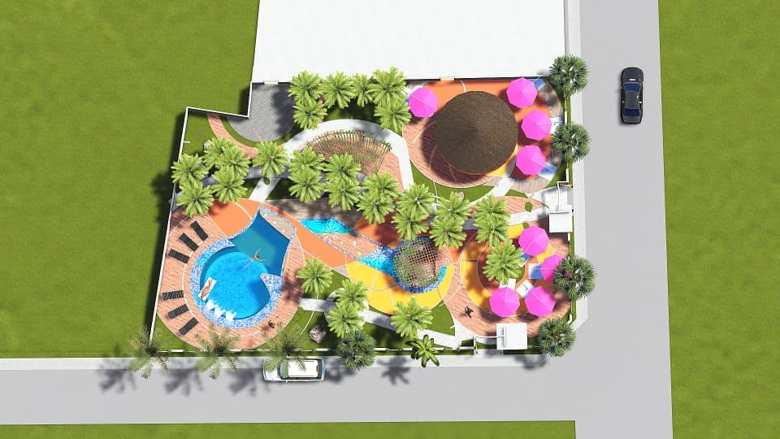
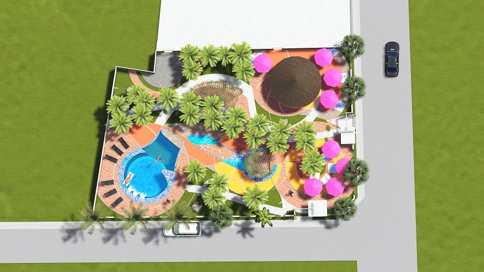

VICTORIEN DJONTSO
Architect & Urban Planner / Developer / BIM & 3D Artist / Digital Art
- Address: 1348, Louvain-la-Neuve
- Email: dvrchipro@gmail.com
- Website | Github | LinkedIn | YouTube
PROFILE
Innovative Architect and Developer with a dual expertise in urban planning and 3D technologies. Passionate about leveraging BIM and programming skills to contribute to large-scale projects. Actively seeking opportunities to apply my skills in a challenging environment.
RECENT HIGHLIGHTS

 

PROFESSIONAL REFERENCES
- NOCA N°414 (National Order of Architects of Cameroon)
SKILLS
- Versatility, Rigor and precision, Critical thinking, Team spirit
- Complex problem solving, Perseverance in projects, Intellectual curiosity, Autonomous learning
- Artistic Sensibility, Graphic Design, Creativity and innovation
- Proficiency in Excel, Python Programming, Visual Programming (Grasshopper-Houdini), Office Pack
CERTIFICATES & TRAINING
- MOOC Sustainable Building (ADEME-France, 2018)
- MOOC BIM: Sustainable Building (ADEME-France, 2018)
LANGUAGES
- French: Mother tongue
- English: Notions
PROJECTS
- Monument of the Fiftieth Anniversary of the National Unity of Cameroon
- Resort with pool in Kribi
AREAS OF INTEREST
- Digital/IT Solutions in Architecture and Graphic Art
- Creative 3D Art
- Data management in simulation, visualization and Implementation/Construction.
PROFESSIONAL PROFILE
- Designing Architectural Plans on Autocad, 2D and 3D Plans, BIM Models Implementation
- Automatic Publication of Plans, Enhancement of BIM information from the model via external sources (Excel, Python, Grasshopper)
- Autocad high-fidelity exchange configuration with Autodesk (layers, colors, layer filters, layout templates), Revit (BIM model, BIM to be improved)
- Knowledge of the legal basis (Belgian law, BIM and Subuilt Space and then on the Environment); cartographic software, techniques and resources useful to the urban planner (following the current specialization in urban planning).
- Sufficient basis for the use of programming and AI in my work environment and my applications (member of the GitHub developer community); use of AI facilitators (GitHub-copilot for code, stable diffusion images); Implementation of local text generation for data management and analysis.
- Ambitions: interactive presentations (virtual and augmented reality), real-time simulation, animations (recent experimentation with Unreal Engine and Houdini)
CAREER
ACADEMIC INTERN
- Desisn Construction, Charleroi - Apprenticeship Contract (June 2023 - August 2023)
- Created 3D models and presentation images for official meetings with stakeholders (Commune, BELRIS, CCATM).
- Prepared presentation documents and conducted field visits on construction sites.
CONSULTANT
- ZF Architects, Yaoundé - Freelance (Mar. 2021 - Sept. 2022)
- Led design and architectural follow-up for various projects.
- Delivered project presentations to clients and stakeholders.
PROFESSIONAL INTERNSHIP
- Cabinet Serge Eloundou - SETREC AUI Sarl, Yaoundé - Professionalization Contract (March 2019 - March 2021)
- Contributed to large-scale building projects, including a ministry office building, as a programmer, designer, and follow-up architect.
STAGE STAFF
- Cabinet Bureau d'Etudes Architectes (BEA), Bafoussam - Professionalization Contract (Aug. 2019 - Dec. 2019)
- Assisted the follow-up architect and designer on the construction of the Bafoussam cathedral.
ACADEMIC INTERN
- URBATHEC Conseil, Yaoundé - Apprenticeship Contract (July 2016 - Sept. 2016)
- Developed architectural designs and created 2D and 3D plans using ArchiCAD.
- Contributed to the iconic DGI (Direction Générale des Impôts) building project in Yaoundé.
- Mentored by Herman Kante, an internationally recognized architect featured in Forbes.
EDUCATION
SPECIALIZED MASTER'S DEGREE
- Urbanism and Territorial Planning (URBA2MC)
- Université catholique de Louvain (Louvain-la-Neuve) - September 2022 - Ongoing
ARCHITECT
- Architecture and Engineering Art (AAI)
- Institut des Beaux-arts de Foumban (IBAF) - (UDs) Foumban-Cameroon - July 2018 - B+ / Fairy good
BACHELOR'S DEGREE IN ARCHITECTURE
- Architecture and Engineering Art (AAI)
- Institut des Beaux-arts de Foumban (IBAF) - (UDs) Foumban-Cameroon - September 2016 - B- / Fairy well
SCIENTIFIC BACCALAUREATE SERIES "C"
- Mathematics and Physical Sciences
- Lycée Classique de Bafoussam - September 2013